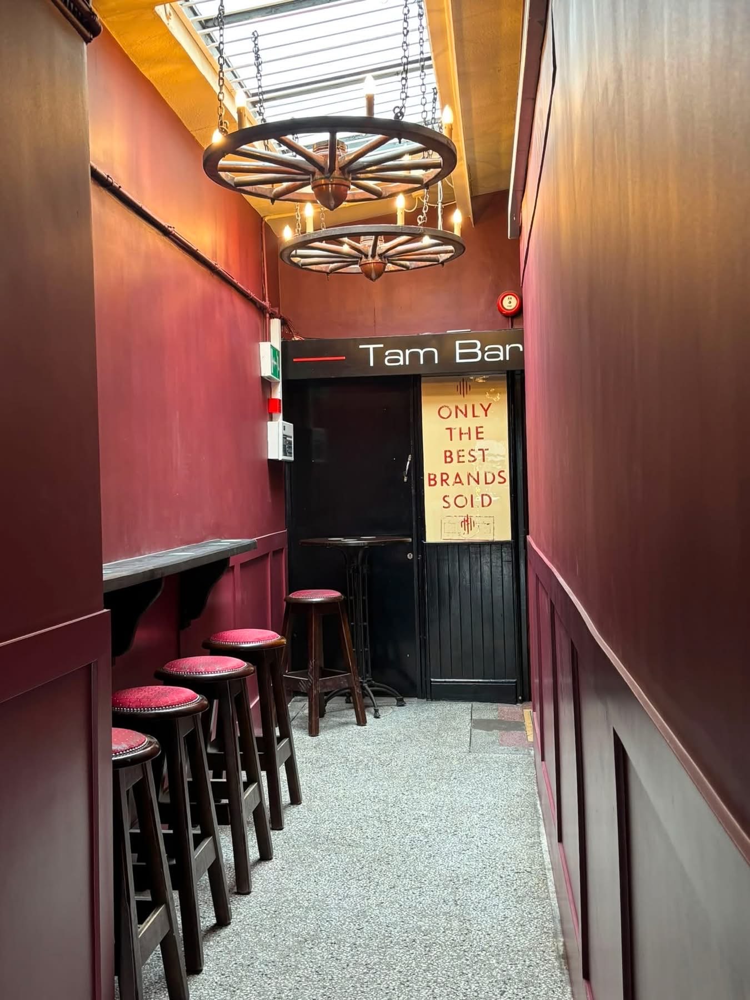
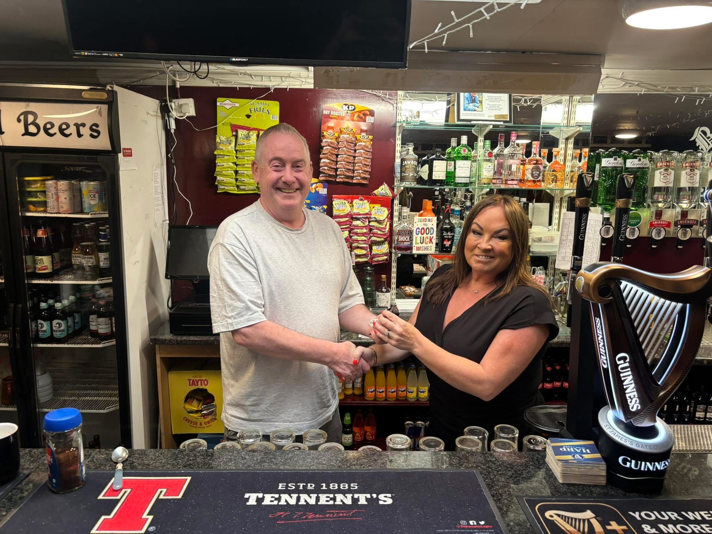
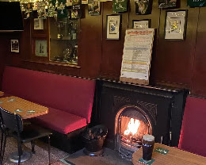
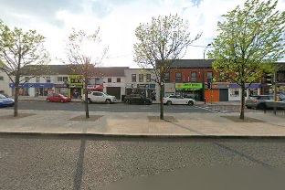
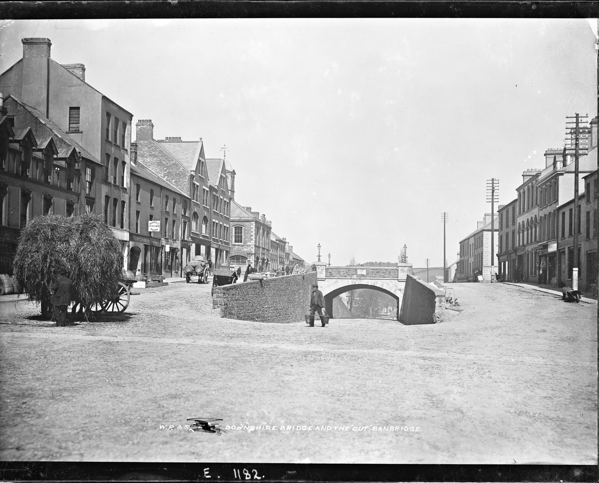

Pints
Guinness on the harp. Tennent’s on the runner. The back shelf is the usual suspects, not a cocktail list.
Checking
CallService · Newry Street · County Down
The Banbridge house people still call the Bus Bar. Wagon wheels over the door, a fire in the lounge, and the match on if there’s one on.

Only the
best brands
sold
01 / The house
Some say Tam Barney’s. Some still say the Bus Bar. A few get it backwards and ask for Barney Tams. Number 75 is the same either way — a short walk from The Cut, on the old Belfast–Dublin coach road.
It is a working Banbridge local. Regulars at the counter, staff who know the room, Tayto on the pegs, Guinness and Tennent’s on the bar. Visitors who found it once tend to come back.
There is no tasting menu. If you’re hungry, there are crisps and nuts. If you want to know what’s on this weekend, Facebook is the noticeboard.



Guinness on the harp. Tennent’s on the runner. The back shelf is the usual suspects, not a cocktail list.
TNT Sports. If the match is on, the room will know about it. Come early on a Friday if you want a perch.
Cheese & onion, roast beef, nuts. A proper pub lunch, if you can call it that.
Banbridge · After hours · Named Tam, of course
For years there were whispers the house might be haunted. Then the CCTV started going off after closing. Bins moved. Lunchboxes hit the floor. Hand wash ended up in the sink.
The burglar was a jet-black kitten, stranded inside, only coming out when the last pint was pulled. The regulars named him Tam. Operation Save Tam followed — RSPCA, Cats Protection, the council — until local cat hero Susan McKeown got the wee thing safely caught.
“Tam Barney’s first lock-in. No drink bought. No rent paid. Caused absolute havoc after hours. And still managed to become a local celebrity.”

02 / The town
Banbridge sat on the Belfast–Dublin mail route. In 1834 the main street was so steep the coaches struggled with the climb, so a cutting was driven through the middle of it. Everyone still calls it The Cut. Tam Barney’s is just along Newry Street from that underpass — a pub on a road that was always meant for people passing through, and for the ones who stay.